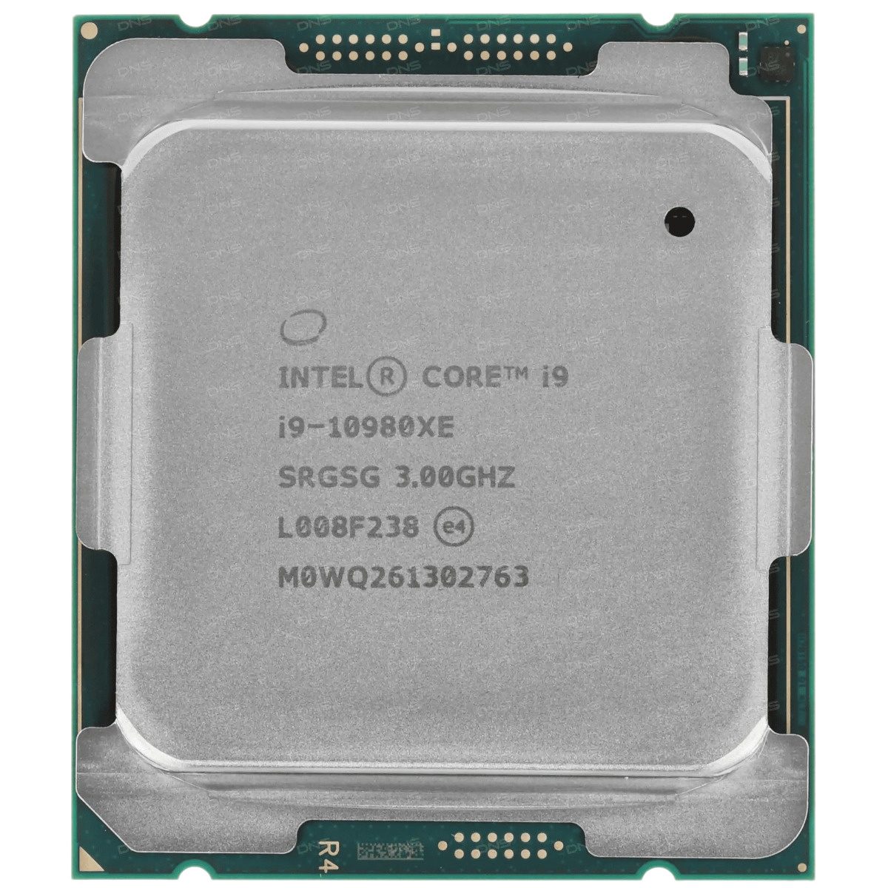
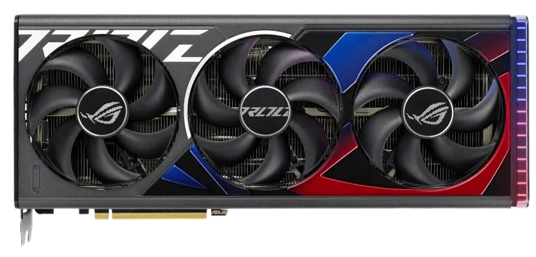

Корпус azza Sanctum 810
Среди нескольких новых модных корпусов производства Azza можно выделить модель Sanctum 810.
Она обладает футуристичным внешним видом со своими стеклянными панелями.
Квадратная конструкция со скошенной верхней частью придаёт корпусу необычный внешний вид.
Подобный дизайн предназначен для размещения крупных компьютерных компонентов и системы жидкостного охлаждения.
Нашлось место и для кабелей. Находящиеся спереди вентиляторы пропускают воздух через сетчатую стенку,
позволяя поддерживать умеренные температуры и красивый внешний вид.
Если вы собираетесь похвастаться своим компьютером и у вас есть место для его размещения,
Sanctum 810 подходит для этого очень хорошо.
Процессор Intel Core i9-10980XE
Процессор Intel Core i9-10980XE BOX представляет собой бескомпромиссное решение для решения профессиональных задач — будь то инженерное проектирование,
пересчет больших массивов данных или моделирование 2D- и 3D-объектов и сложных сцен.
Модель выполнена на архитектуре Cascade Lake-X и использует техпроцесс 14 нм. Для установки на материнские платы используется сокет LGA 2066.
Процессор Intel Core i9-10980XE BOX оснащен 18 ядрами и 36 потоками, что вкупе с большим объемом кэшей разного уровня,
диапазоном рабочих частот от 3000 до 4800 МГц
и возможностью увеличения этих значений за счет свободного множителя обеспечивает высокую вычислительную мощность даже для самых сложных задач.
Максимальный объем оперативной памяти типа DDR4 может достигать 256 ГБ при частоте до 2933 МГц.
Помимо этого модель отличается поддержкой различных наборов команд и технологий виртуализации,
а встроенный контроллер PCI-E соответствует версии 3.0.
Тепловыделение процессора Intel Core i9-10980XE BOX составляет 165 Вт. Пиковая температура при нагрузке может достигать 86°C.
Видеокарта ASUS GeForce RTX 4090 ROG Strix
Видеокарта ASUS GeForce RTX 4090 ROG Strix с архитектурой Ada Lovelace обеспечивает производительность
и реалистичность графики при редактировании мультимедиа,
в программах обработки 3D-изображений, играх.
Для ускорения творческого процесса реализована аппаратно-программная платформа NVIDIA Studio.
Утилита GPU Tweak III предлагает мониторинг состояния и настройку производительности.
Вентиляторы Axial-tech с двойными шарикоподшипниками формируют интенсивный воздушный поток и улучшают отвод тепла от радиатора.
Вращение центрального вентилятора в противоположном направлении уменьшает турбулентность.
В режиме низкой вычислительной нагрузки вентиляторы полностью останавливаются.
Видеокарта ASUS GeForce RTX 4090 ROG Strix дополнена подсветкой Aura Sync с адресуемыми светодиодами
и программируемыми эффектами освещения. Металлическая панель на тыловой стороне защищает графический адаптер от деформации.
Оперативная память Kingston FURY Renegade Pro выполнена в виде комплекта из четырех модулей объемом по 32 ГБ.
Они относятся к поколению DDR5.
Регистровая память RDIMM ориентирована на обслуживание профессиональных рабочих станций или серверного оборудования.
Функционирование на частоте 4800 МГц обеспечивает быстрый запуск программ и стабильную производительность при обработке требовательных ресурсов.
Интегрированная схема управления питанием и функция коррекции ошибок ECC гарантируют стабильную работу ОЗУ Kingston FURY Renegade Pro.